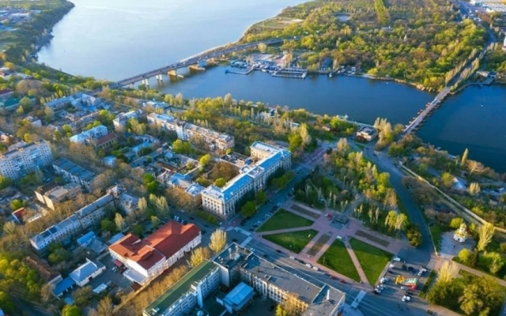
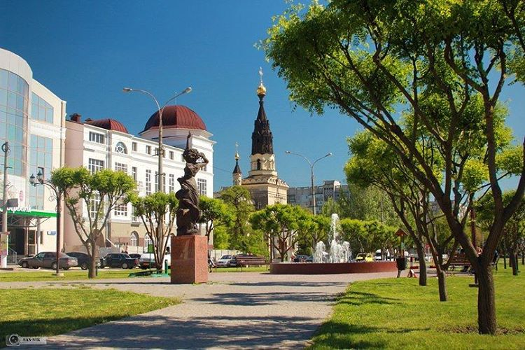
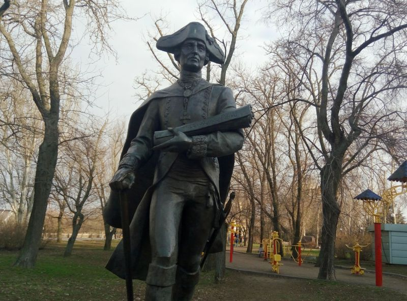
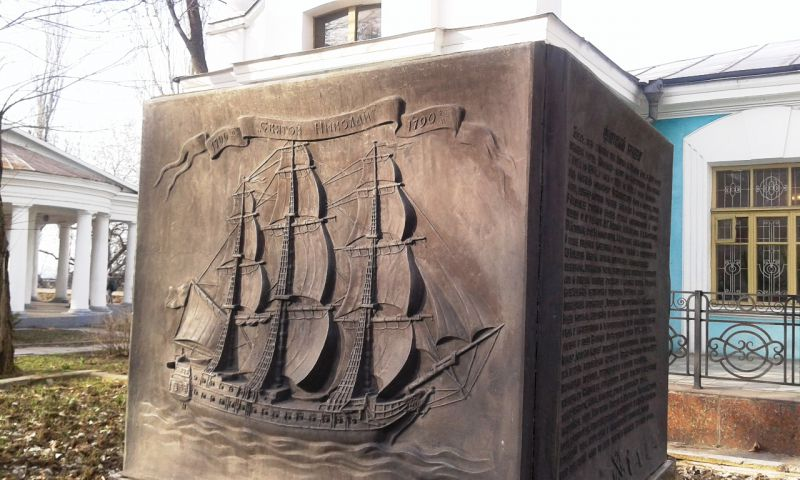
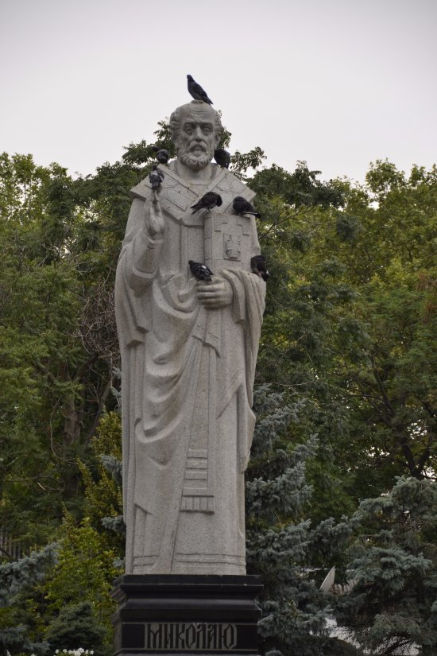
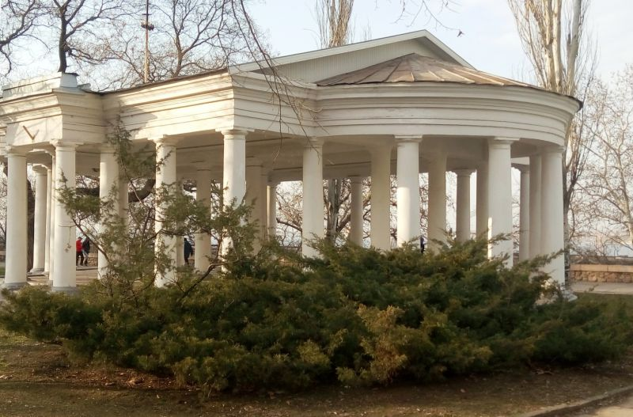
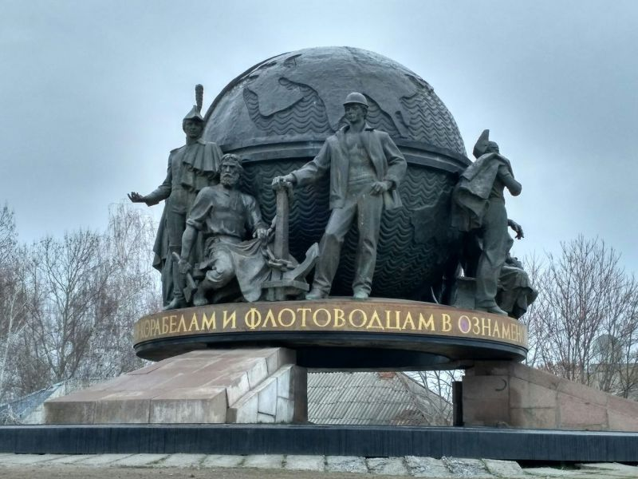
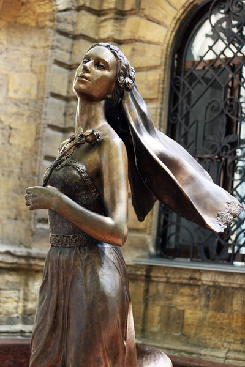
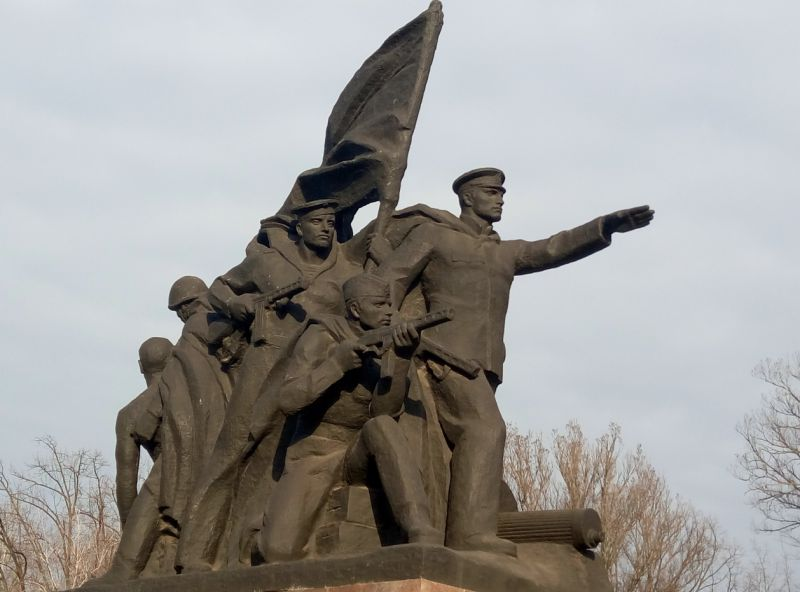

От древних поселений к новому городу корабелов
Первые поселения на этой земле существовали еще в эпоху неолита, о чем поведали найденные археологические артефакты. Затем были времена скифов, древнегреческих поселенцев, славян, ордынцев, свободных запорожских казаков, державших оборону на здешних степных просторах.
Но как город Николаев стал развиваться в 18 веке, когда после победы над турками и освобождения Северного Причерноморья здесь начали строить первые судоверфи для флота царицы Екатерины Второй. Российская империя стремилась усилить свои южные границы и получить выход к Черному морю.
И вот победитель императрицы князь Григорий Потемкин издает указ, приказав строить в устье реки Ингул новую верфь. В то время здесь был пустынный край, кто мог бы подумать, что здесь так быстро вырастет новый замечательный город?
В Николаеве установлен памятник князю Потемкину у здания, называемого адмиралтейством. Хотя на самом деле это одно из помещений судостроительного завода, построенного уже в советские времена. А старое адмиралтейство не сохранилось. Ниже вы узнаете и другие интересные факты о Николаеве.
Михаил Фалеев – первый гражданин Николаева
Строительством первых судоверфей (в том числе финансовой стороной дела) в 1788 году руководил ближайший помощник Потемкина – промышленник и купец Михаил Фалеев. Интересно, что он строил за свой счет военные корабли, а затем продавал их казны. Его можно считать первым инвестором судостроения российского флота. Фалеев стал первым гражданином Николаева – нового города, главного дела его жизни. Так началась судостроительная история Николаева.
Это был замечательный человек, напористый и одержимый. Как-то князь Потемкин поддернул своего соратника: мол, не под силу расчистить днепровские пороги, чтобы проводить суда с грузами в Херсон? И Фалеев приступил к строительству обводных судоходных каналов, впоследствии основал лоцманскую службу. И Днепр стал судоходным от Киева до Херсона! За особые заслуги сообразительный и решительный купец был возведен во дворяне, а также получил и военный чин, дослужившийся до полковника, удостоенный множества наград. Под его руководством строили и гребные запорожские лодки в Херсоне, так называемые чайки, ставшие основой Днепровской флотилии. Впоследствии Фалеев стал знатным гражданином и Николаева, и Херсона.
В городе уважают своего первого гражданина: одна из улиц в центре города названа Фалеевской. Ему установлен памятник: по замыслу скульптора, Михаил Фалеев энергично шагает по Флотскому бульвару – вероятно, к своим большим делам.
История названия города Николаев
Название свой город получил через год после основания судоверфей. Как раз в день Святого Николая русская армия под руководством великого полководца Александра Суворова штурмом взяла город Очаков. Кстати, большую роль в этом сражении как раз сыграла Днепровская флотилия, построенная, как уже сказано, под руководством Фалеева.
В честь этой победы и святого, считающегося покровителем моряков и путешественников, князь Потемкин подписал ордер, дав название новому городу – Николаев. О своем решении он сообщил Фалееву письмом.
Первый корабль, построенный в Николаеве, тоже назвали в честь покровителя города. Это 46-пушечный фрегат «Святой Николай». Его спустили на воду в 1790 году. Прослужил он всего 11 лет и был продан в Неаполе за 11,5 тысячи дукатов. На Флотском бульваре можно увидеть изображение фрегата и прочесть его историю.
Во времена независимой Украины в уютном Каштановом сквере построили памятник святому Николаю, в честь которого назван город.
Со времени строительства первой судоверфи и до наших дней жизнь Николаева была тесно связана с судостроением и флотом. Почти сто лет здесь размещался штаб Черноморского флота.
Во время Крымской войны (1853-1856) Николаев стал главной тыловой базой флота. Город знал великих флотоводцев еще со времен Потемкина, и его жители с гордостью сохраняют свою историю. Большая Морская, Малая Морская, Адмиральская улицы, Флотский бульвар – вот далеко не полный список улиц, имена которых связаны с корабельным и морским делом. В Николаеве есть улица и проспект, названные в честь великого флотоводца, корабельного конструктора и учёного адмирала Степана Макарова – уроженца города. Макаров известен тем, что сконструировал первый ледокол и отправился в первую морскую экспедицию в Арктику. В Николаеве на Флотском бульваре установлен и памятник адмиралу Макарову.
В городе немало старинных домов – памятников архитектуры, которые служат его украшением и напоминают об эпохе славных кораблестроителей и адмиралов. Сохранился и домик Макарова. Одно из самых красивых построек – дом вице-адмирала Попандопуло. Не удивляйтесь: это не одноименный персонаж советской комедии «Свадьба в Малиновке», а настоящий храбрый офицер, начавший путь моряка с 14 лет.
В советские времена, когда был в чести монументализм, в городе построили огромный памятник корабелам и флотоводцам, или просто «шар», как называют его местные жители. Вокруг земного шара – трехметровые фигуры судостроителей всех эпох.
«Город невест» и другие легенды
Николаев еще называют городом жениха. Откуда такая слава? Тоже со времен Потёмкина-Таврического. По большому счету, Николаев можно было с таким же успехом назвать «городом женихов»: ведь строили его мужчины-корабли, которых свозили «за тридевять земель» в пустынную местность. Нехватка прекрасного пола чувствовалась очень сильно, и многие, даже крепостные, норовили убежать.
Тогда князь нашел выход: из всех окрестных сел в строящийся город стали свозить самых красивых девушек. Легенда свидетельствует, что знакомство проходило так: мужчин и барышень выстраивали друг напротив друга на Адмиральской площади. Образовались пары, и тут же устраивались массовые свадьбы: молодые отправлялись венчаться в церковь.
У местного загса установлен памятник невесте. Правда, это не девушка с потемкинских времен, а скорее наша современница в коротком платье и босоножках. Грустная она какая-то со своим цветочком! В Николаеве шутят по поводу двухметровой скульптуры, называя ее «памятником брошенной невесте». Тем не менее, зародилось поверье, что если влюбленные потрут фату девушки, то они никогда не расстанутся.
Легендарный подвиг
А теперь еще о ставшей легендарной реальной странице истории. Это освободительные бои за город, захваченный германской армией во время Второй мировой войны. Ранним утром 12 марта 1944 года десант морской пехоты под командованием старшего лейтенанта Ольшанского высадился в порту, захватил и оборонял портовый элеватор. Бойцы отбили 18 атак противника и держались два дня, пока армия освободителей не вошла в Николаев. Но в живых из 68 десантников осталось только 12.
